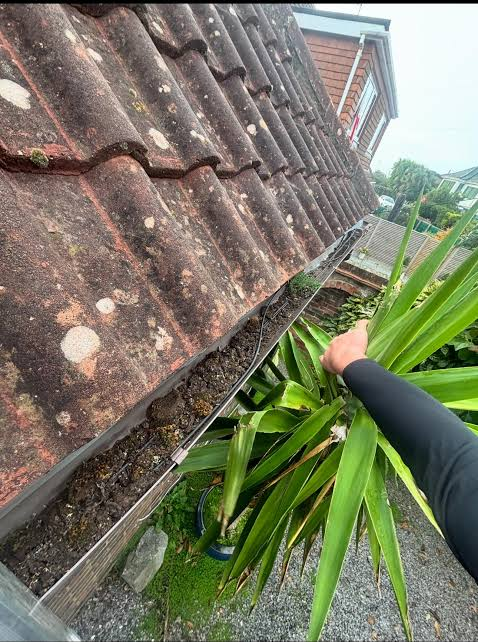

Sometimes it can be difficult to tell if your gutters are blocked. You could climb a ladder every time you want to check, but that could be a little risky if you aren’t confident with heights.

Gutter Cleaning Salford
You would be hard pressed finding too many people who are very enthusiastic about cleaning their gutters.
Gutter Cleaning
Commercial Gutter Cleaning
Solar Panel Cleaning
Gutter Cleaning Salford
Gutter Cleaning Salford
On a sweltering Salford day, while you wait for the Fremantle Doctor to finally cool things off, climbing up a ladder, wallowing elbow deep in whatever ooze and mud and leaf litter (and possibly wasp nests) that happens to be clogging up your gutters, is not high on many people’s ‘Can’t Wait To Do’ list. You want to be with friends or family, or maybe just enjoying the cool of your air conditioned home.
And Gutter Cleaning Salford totally gets that. For many years, we’ve been tackling Salford’s gutter cleaning problems. There are no better options than us for cleaning up your gutters if you live in Salford or its surrounding suburbs.
And of course, it should go without saying – although we are saying it anyway – that all of the contractors that work for Gutter Cleaning Salford are fully insured, and follow all Occupational Health and Safety standards with rigorous attention. We are aware that everything we do on a job has consequences; cleaning gutters at a height has a number of potential problems, and the safety of you, your family and our contractor’s are our highest priorities.
Don’t think we only do gutter cleaning’s for domestic house, either.
No, we also perform Commercial Gutter Cleaning services, as well. Whether you own a shop, or an office building, or perhaps a hotel … well, let’s put it this way – if you own something that has gutters, and those gutters need a clean, we are the best options for you to get the job done. Heights don’t scare us, the size of the job doesn’t scare us; whatever the job is, we are the right people to ensure the job is done quickly and safely.
We’ve mentioned our Gutter Cleaning services for both domestic and commercial customers, but let’s not forget we also perform Solar Panel Cleaning services. Sitting up on the roof all day, often not protected from the elements, our solar panels can get pretty knocked around and covered with leaves, dirt, mud and the droppings of whatever bird just happens to be flying by.
A solar panel requires its entire surface area to be devoted to the gathering of the sun’s rays, otherwise, the energy output of your panels diminishes, which could cause the cost of energy to increase.
And that is not something you want.
We are aware that Salford has many gutter cleaning companies that you can choose from, but we believe we are the best. Call us today, or fill in the free quote form and one of our friendly staff will be happy to talk to you.
About Us
About Us

About Us
Gutter & Solar Panel Cleaning
At Gutter Cleaning Salford, we know that any chance of repeat business depends on how well we perform our job. As gutter and solar panel cleanings are not one-off services, but services that need to be repeated over the life of the home, our main focus is not simply on the single job that we can perform for you now, but proving that we can be your Gutter and Solar Panel Cleaning company far into the future.
We’re thinking about the long term, and as such, we know that the service and care that we provide is paramount.
Any job that requires a contractor to come to your home or place of business to perform their job quite clearly requires a matter of trust between you and the contractor. We are performing a cleaning service on your home, the place where you are supposed to feel most safe, and that responsibility is never taken likely.
Every job we perform will be done with attention to detail and complete care. We want you to trust us with your business, not just for now, but for years into the future.
If this sounds like a company you want working on your gutters or solar panels, wait no longer. Call us now. Or fill in the free quote form, and one of our friendly staff members will be happy to contact you.
Gutter Maintenance
How Can I Know If My Gutters Are Blocked?

Clogged
Gutters
Often people are only aware for the first time they have a gutter drainage problem when a big storm comes along and they find their gutter can’t handle the deluge of water.
So, clearly, that is one thing you should check; after it rains, how is the water flowing down your drain pipe? If your gutter is working as it should, if there are no blockages, you shouldn’t have water spilling over the sides of the gutter. Unless you are experience a severe torrent of rainfall, the gutter should be able to divert it down the drain pipe without incident.
Waiting for the weather is not the only way to foresee a problem. Check your gutters and take note of whether they are sagging. If there is debris and dirt and gunk in your gutters, the weight might be causing the gutter to sag a bit. This will be even easier to notice if you’ve had recent rain as the water will mix with the clogged gunk, giving added weight and increasing the sagging.
A further clue is if you notice mildew and rust. If water is not getting away properly, say due to a blocked gutter, the water will begin to affect its environment and in the way of mildew and rust. So, if there’s mildew or rust along the sides of your home or up high near your roof, that could be symptomatic of a water blockage problem, perhaps caused by clogged gutters.
Another clue relates to taking notice of who (or what) is coming to visit. Not your house … but your gutters. Little rodents really love the homely and safe confines of a gutter filled with leaves and debris. And all those leaves, twigs and mulch are simply eye-candy to birds who are looking for nesting material.
And finally, one of the biggest signs of a clogged gutter is if there are actually plants growing out of your gutter. You can be very sure you have a clogged gutter if there is enough soil and water to allow plants to grow.
Gutter Cleaning
Do I Have To Clean My Gutters?
Why keeping your gutters clear matters.

Wasp nest hanging underneath gutters
It is a very good idea to clean your gutters, for one very good reason. Water. The whole point of gutters is to get rain off the roof and into your drainage system.
If something is blocking your gutters, than that water is not getting to where it needs to be. Now the water has to go somewhere, but with a clogged gutter, you are no longer in control of where it goes.
We all know the effects of water, over time, on wood and metal. We know metal rusts and wood becomes pulpy and mushy.
That could be what is happening to your property when you are no longer in control of where the water goes.
Because of blocked gutters, water may pool on the roof, and over time this might cause your roof to rot in places. This could lead to a costly roof repair visit. If water is pooling around the foot of your house, then your home’s foundations could be at risk.
And a lesser considered problem could be what the pool water might attract. We mentioned that blocked gutters might attract rodents and birds, but the pooled water might attract disease carrying mosquitoes and vermin, which might get into your home through cracks in your walls and roof.
Safety First
Why Don’t I Just Clean Them Myself?
Professional gutter cleaning can help avoid the risks associated with working at height.

So, we’ve managed to convince you that cleaning your gutters is a good thing, but you want to do it yourself. To which we say, please think twice about that.
It takes time and training and experience to work from ladders and the roof. Old gutters, or gutters that have been buckled due to the weight of the blockages within, may not be able to take the weight of the ladder plus you, and you don’t want to be at the top of the ladder when you realise that your perch is not as stable as it should be.
Did you know that it only requires a fall of a couple of metres to seriously injury yourself, and that every year many people die from a fall from their ladders?
But really … why take the risk? Particularly when there are companies like ours with contractors who are trained at working at heights, who can foresee whether a gutter’s integrity has been compromised, who can work quickly, expertly and safely, so that you don’t have to.
Salford, MediaCityUK, & Worsley
We offer gutter cleaning for both commercial and industrial buildings, as well as traditional suburban residential blocks in Worsley, MediaCityUK, Salford and Pendleton. We have experience of cleaning gutters of waterfront properties in Salford Quays that have organic material accumulated due to the highly humid local weather. The heavy rain and high humidity conditions often result in grass spores and wind blown weed seeds rooting in the silt layers that end up in commercial flat roof boundaries and low pitch roof lines. If the problem is not resolved, the gutter tracking can end up with blockages. This can lead to flat roof leaks due to water gathering at the seams.
To address these problems, we use inspection cameras mounted on high lift poles to inspect growth patches on industrial and commercial buildings.
One of our recent projects includes the cleaning of guttering tracks in a commercial office building at the waterfront at MediaCityUK (M50). The 110 linear metres of guttering track was cleared of water that was caused by weeds. We used an industrial tier wet vacuum system that was equipped with carbon fibre suction lines. The job was completed successfully without disrupting the underlying roof membranes.
We cleaned all the wide profile seamless aluminum box gutters that were paired with high volume square downpipe collectors. We cleared up all the organic material that had accumulated around the main outlet grates to keep the downpipes functioning to handle the heavy downpours of Salford.
The quay side location meant that the gutter tracking was full of urban silt and debris, which needed high flow water testing to ensure that the drainage lines were completely clear.
Gutter Cleaning Salford
Call us today, or fill in the free quote form and one of our friendly staff will be happy to talk to you.
Get In Touch
Request Your Free Salford Quote
Call us today, or fill in the free quote form and one of our friendly staff will be happy to talk to you.
Thank you! Your quote request has been received. We'll be in touch shortly.